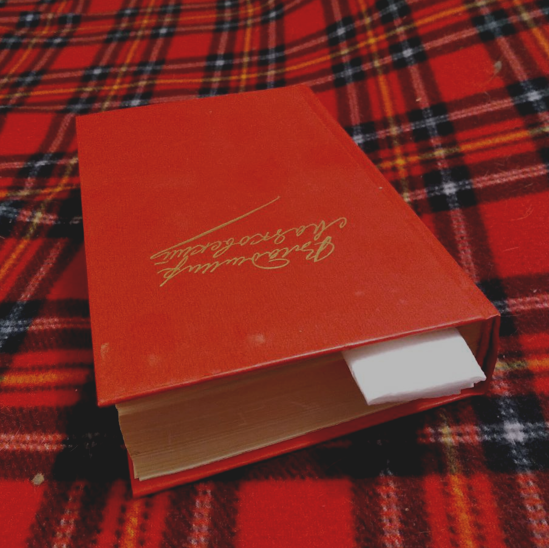

Поэтиное сердце
(Оммаж Маяковскому)
Религиоведы любят показывать дилетантам эффектный фокус: если в Библии отделить закладкой Ветхий завет от Нового, то получится две неравные части. Первая - полная «богоугодных» жестокостей с вкраплениями душеспасительных назиданий - занимает в разы больший объем, чем вторая, гуманная и взывающая к справедливости. В творчестве Маяковского все наоборот. Если положить закладку где-нибудь в районе «Хорошего отношения к лошадям», то его однотомник распадется на тоненькую брошюрку гениальных стихов в начале, и сборник бойких, но умеренно тоскливых «агиток» со все более редкими по мере приближения к концу вкраплениями того, что называется творчество.

Большевизм Маяковскому трудно простить, точнее говоря, этот его атрибут трудно «развидеть», потому что для огромного количества читателей его ранние стихи стали дверью в мир большой поэзии. Для меня так точно. В начале 1980-х, когда я был подростком, мало что из дореволюционной отечественной литературы можно было раздобыть даже в библиотеках, не говоря о свободной продаже. Как писал в те годы Андрей Вознесенский,
Попробуйте купить Ахматову.
Вам букинисты объяснят,
что черный том ее агатовый
куда дороже, чем агат.
Понимание истории и литературы приходилось собирать по крохам. Даже скудные упоминания о старом быте, о дореволюционном образе мышления, содержащиеся в стихах Маяковского, рассказах Чехова, только что «разрешенных» книгах Зощенко, Аверченко, Ильфа и Петрова вызывали изумление своей непохожестью на официальную советскую идеологию. (В столицах уже и Булгаков был не в новинку, но до провинции, где я жил, он «добрался» только ко второй половине 1980-х). Хочется процитировать БГ, который удачно зафиксировал такое эмоциональное состояние:
Мне кажется, я узнаю себя
В том мальчике, читающем стихи;
Он стрелки сжал рукой, чтоб не кончалась эта ночь,
И кровь течёт с руки.
Трудно избавиться от впечатления, что дореволюционные и постреволюционные стихи Маяковского написаны разными людьми. В его раннем творчестве никаких намеков на симпатии к пролетариату или социализму не найти. Даже Блок отметился на этом поприще стихотворением «Фабрика» («В соседнем доме окна желты…»), а вот «великий пролетарский поэт» ни словом о страданиях рабочих не обмолвился. Разве что, посочувствовал каким-то перуанским гребцам на галере, которых непонятно как занесло в Красное море. Но это скорее дань экзотике, чем борьба за права угнетенных, которых автору «жаль» в последнюю очередь, а гораздо жальче загубленную природу и первобытную свободу.
Ранняя лирика Маяковского пронизана крайним индивидуализмом, ницшеанским, ибсеновским. Такая уж тогда была мода, и если кто-то скажет, что, например, его стихотворение «Послушайте» несет в себе заряд альтруизма, то сам поэт рассмеялся бы такому недалекому ценителю поэзии в лицо.
…и, надрываясь
в метелях полуденной пыли,
врывается к Богу,
боится, что опоздал,
плачет,
целует ему жилистую руку,
просит —
чтоб обязательно была звезда! —
клянется —
не перенесет эту беззвездную муку!
А после
ходит тревожный,
но спокойный наружно.
Говорит кому-то:
«Ведь теперь тебе ничего?
Не страшно?
Да?!»
Это не альтруизм, это самолюбование, стремление привлечь внимание, иначе зачем любителю звезд этот «кто-то»? В этом для молодого, фонтанирующего эмоциями человека ничего зазорного нет. Если же у кого-то остались сомнения в эгоизме и индивидуализме Маковского, их может развеять другое, не слишком известное его стихотворение:
ТЕПЛОЕ СЛОВО КОЕ-КАКИМ ПОРОКАМ
(ПОЧТИ ГИМН)
Ты, который трудишься, сапоги ли чистишь,
бухгалтер или бухгалтерова помощница,
ты, чье лицо от дел и тощищи
помятое и зеленое, как трешница.
Портной, например. Чего ты ради
эти брюки принес к примерке?
У тебя совершенно нету дядей,
а если есть, то небогатый, не мрет и не в Америке.
Говорю тебе я, начитанный и умный:
ни Пушкин, ни Щепкин, ни Врубель
ни строчке, ни позе, ни краске надуманной
не верили — а верили в рубль.
Живешь утюжить и ножницами раниться.
Уже сединою бороду перевил,
а видел ты когда-нибудь, как померанец
растет себе и растет на дереве?
Потеете и трудитесь, трудитесь и потеете,
вытелятся и вытянутся какие-то дети,
мальчики — бухгалтеры, девочки — помощницы, те и те
будут потеть, как потели эти.
А я вчера, не насилуемый никем,
просто,
снял в «железку» по шестой руке
три тысячи двести — со ста.
Ничего, если, приложивши палец ко рту,
зубоскалят, будто помог тем,
что у меня такой-то и такой-то туз
мягко помечен ногтем.
Игроческие очи из ночь
блестели, как два рубля,
я разгружал кого-то, как настойчивый рабочий
разгружает трюм корабля.
Слава тому, кто первый нашел,
как без труда и хитрости,
чистоплотно и хорошо
карманы ближнему вывернуть и вытрясти!
И когда говорят мне, что труд, и еще, и еще,
будто хрен натирают на заржавленной терке,
я ласково спрашиваю, взяв за плечо:
«А вы прикупаете к пятерке?»
И никакая это не скрытая сатира на «буржуев». Это самый настоящий, открытый, хохочущий в лицо унылым простофилям здоровый цинизм хищника. Чтобы написать такое откровение, нужно обладать незаурядным талантом, так что не будем адресовать этому произведению ханжеских упреков, оценим по достоинству его искренность, утраченную (или ставшую невозможной) где-то «в районе» 1918 года.
Стихи Маяковского - это то, во что каждому молодому человеку, переживающему пубертатный или постпубертатный период следует окунуться с головой. А вот те из них, где смысл выходит за рамки личных переживаний, заслуживают уже не художественного, а исторического анализа, которым и займемся в следующем материале.